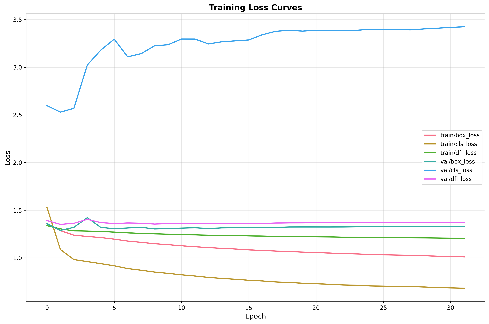
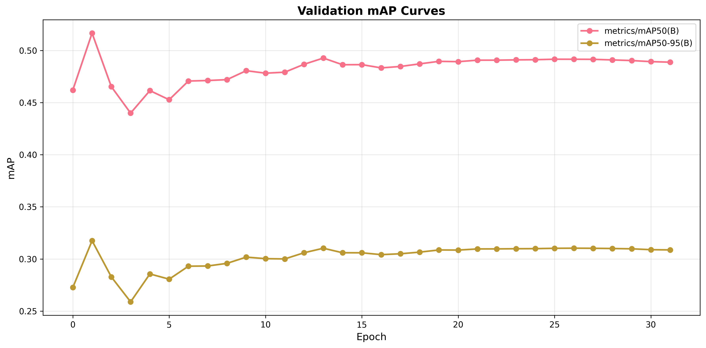
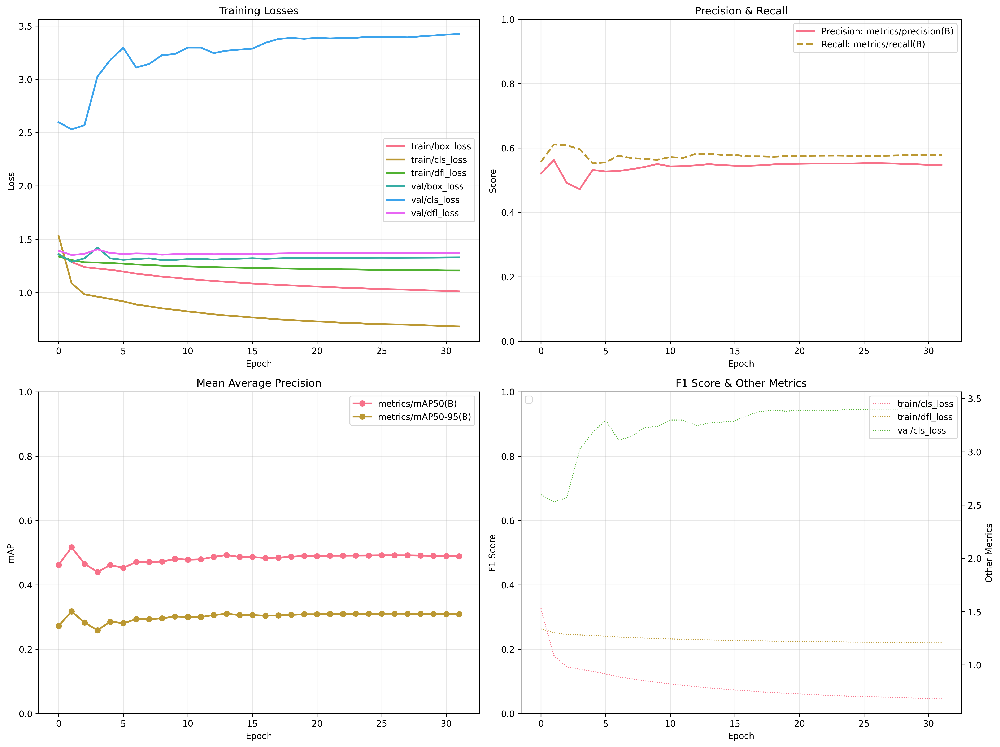
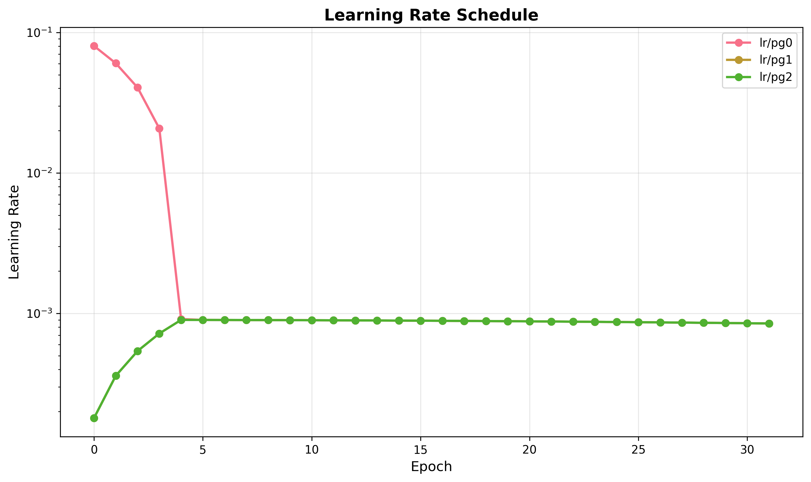
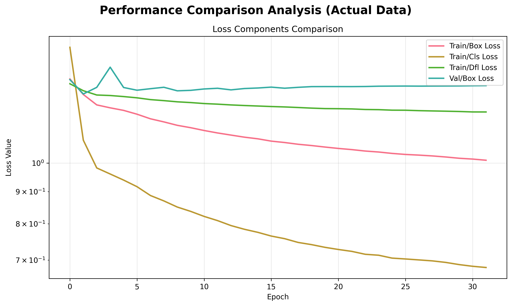
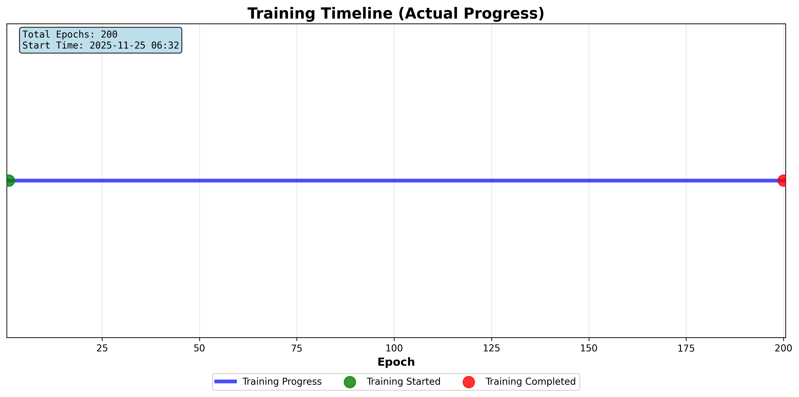
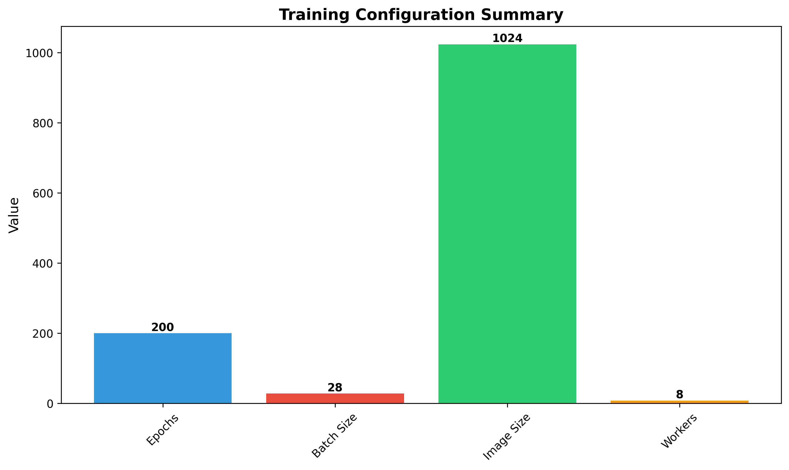

Epoch-by-epoch training progress with all metrics:
| Epoch | time | train/box_loss | train/cls_loss | train/dfl_loss | metrics/precision(B) | metrics/recall(B) | metrics/mAP50(B) | metrics/mAP50-95(B) | val/box_loss | val/cls_loss | val/dfl_loss | lr/pg0 | lr/pg1 | lr/pg2 |
|---|---|---|---|---|---|---|---|---|---|---|---|---|---|---|
| 1 | 537.9020 | 1.3614 | 1.5291 | 1.3376 | 0.5207 | 0.5569 | 0.4620 | 0.2726 | 1.3579 | 2.5973 | 1.3911 | 0.0802 | 0.0002 | 0.0002 |
| 2 | 1052.1800 | 1.2858 | 1.0872 | 1.3039 | 0.5623 | 0.6111 | 0.5166 | 0.3175 | 1.2883 | 2.5295 | 1.3513 | 0.0604 | 0.0004 | 0.0004 |
| 3 | 1570.2000 | 1.2377 | 0.9819 | 1.2834 | 0.4913 | 0.6083 | 0.4653 | 0.2827 | 1.3200 | 2.5689 | 1.3623 | 0.0406 | 0.0005 | 0.0005 |
| 4 | 2066.7400 | 1.2244 | 0.9604 | 1.2811 | 0.4720 | 0.5963 | 0.4399 | 0.2588 | 1.4214 | 3.0240 | 1.4043 | 0.0207 | 0.0007 | 0.0007 |
| 5 | 2938.7900 | 1.2130 | 0.9392 | 1.2761 | 0.5318 | 0.5522 | 0.4615 | 0.2856 | 1.3194 | 3.1803 | 1.3694 | 0.0009 | 0.0009 | 0.0009 |
| 6 | 3505.4400 | 1.1961 | 0.9166 | 1.2702 | 0.5270 | 0.5553 | 0.4527 | 0.2806 | 1.3062 | 3.2949 | 1.3608 | 0.0009 | 0.0009 | 0.0009 |
| 7 | 5107.2900 | 1.1761 | 0.8874 | 1.2620 | 0.5286 | 0.5756 | 0.4707 | 0.2930 | 1.3135 | 3.1096 | 1.3658 | 0.0009 | 0.0009 | 0.0009 |
| 8 | 5615.5200 | 1.1628 | 0.8700 | 1.2572 | 0.5339 | 0.5688 | 0.4711 | 0.2932 | 1.3204 | 3.1427 | 1.3637 | 0.0009 | 0.0009 | 0.0009 |
| 9 | 6553.1300 | 1.1483 | 0.8506 | 1.2518 | 0.5408 | 0.5659 | 0.4720 | 0.2958 | 1.3034 | 3.2257 | 1.3545 | 0.0009 | 0.0009 | 0.0009 |
| 10 | 7656.1700 | 1.1382 | 0.8372 | 1.2483 | 0.5502 | 0.5635 | 0.4806 | 0.3017 | 1.3056 | 3.2366 | 1.3595 | 0.0009 | 0.0009 | 0.0009 |
| 11 | 8144.6500 | 1.1266 | 0.8219 | 1.2438 | 0.5427 | 0.5717 | 0.4782 | 0.3003 | 1.3122 | 3.2966 | 1.3585 | 0.0009 | 0.0009 | 0.0009 |
| 12 | 8640.0500 | 1.1165 | 0.8093 | 1.2410 | 0.5435 | 0.5692 | 0.4791 | 0.3000 | 1.3156 | 3.2964 | 1.3619 | 0.0009 | 0.0009 | 0.0009 |
| 13 | 9131.8100 | 1.1079 | 0.7947 | 1.2376 | 0.5460 | 0.5820 | 0.4867 | 0.3059 | 1.3079 | 3.2451 | 1.3584 | 0.0009 | 0.0009 | 0.0009 |
| 14 | 10228.1000 | 1.0994 | 0.7840 | 1.2349 | 0.5499 | 0.5820 | 0.4927 | 0.3103 | 1.3143 | 3.2678 | 1.3595 | 0.0009 | 0.0009 | 0.0009 |
| 15 | 10713.8000 | 1.0928 | 0.7752 | 1.2326 | 0.5466 | 0.5784 | 0.4863 | 0.3059 | 1.3169 | 3.2774 | 1.3593 | 0.0009 | 0.0009 | 0.0009 |
| 16 | 11201.4000 | 1.0836 | 0.7647 | 1.2303 | 0.5449 | 0.5785 | 0.4864 | 0.3059 | 1.3211 | 3.2869 | 1.3631 | 0.0009 | 0.0009 | 0.0009 |
| 17 | 11689.5000 | 1.0780 | 0.7574 | 1.2284 | 0.5445 | 0.5740 | 0.4833 | 0.3041 | 1.3158 | 3.3414 | 1.3619 | 0.0009 | 0.0009 | 0.0009 |
| 18 | 12744.6000 | 1.0711 | 0.7470 | 1.2259 | 0.5461 | 0.5738 | 0.4846 | 0.3049 | 1.3202 | 3.3776 | 1.3653 | 0.0009 | 0.0009 | 0.0009 |
| 19 | 13257.5000 | 1.0661 | 0.7410 | 1.2231 | 0.5491 | 0.5728 | 0.4871 | 0.3065 | 1.3236 | 3.3881 | 1.3669 | 0.0009 | 0.0009 | 0.0009 |
| 20 | 14958.7000 | 1.0602 | 0.7337 | 1.2210 | 0.5505 | 0.5747 | 0.4895 | 0.3086 | 1.3238 | 3.3795 | 1.3671 | 0.0009 | 0.0009 | 0.0009 |
| 21 | 15448.2000 | 1.0548 | 0.7279 | 1.2205 | 0.5509 | 0.5748 | 0.4892 | 0.3085 | 1.3237 | 3.3887 | 1.3680 | 0.0009 | 0.0009 | 0.0009 |
| 22 | 16321.4000 | 1.0503 | 0.7229 | 1.2195 | 0.5515 | 0.5762 | 0.4906 | 0.3096 | 1.3236 | 3.3833 | 1.3681 | 0.0009 | 0.0009 | 0.0009 |
| 23 | 16842.5000 | 1.0448 | 0.7152 | 1.2170 | 0.5518 | 0.5765 | 0.4907 | 0.3096 | 1.3242 | 3.3870 | 1.3684 | 0.0009 | 0.0009 | 0.0009 |
| 24 | 17339.7000 | 1.0411 | 0.7127 | 1.2163 | 0.5515 | 0.5767 | 0.4909 | 0.3098 | 1.3256 | 3.3884 | 1.3694 | 0.0009 | 0.0009 | 0.0009 |
| 25 | 17844.9000 | 1.0358 | 0.7052 | 1.2140 | 0.5517 | 0.5760 | 0.4911 | 0.3099 | 1.3260 | 3.3981 | 1.3696 | 0.0009 | 0.0009 | 0.0009 |
| 26 | 18348.9000 | 1.0318 | 0.7030 | 1.2137 | 0.5526 | 0.5761 | 0.4916 | 0.3102 | 1.3263 | 3.3957 | 1.3698 | 0.0009 | 0.0009 | 0.0009 |
| 27 | 18842.1000 | 1.0293 | 0.7006 | 1.2118 | 0.5529 | 0.5756 | 0.4915 | 0.3103 | 1.3259 | 3.3949 | 1.3697 | 0.0009 | 0.0009 | 0.0009 |
| 28 | 19349.4000 | 1.0262 | 0.6981 | 1.2106 | 0.5520 | 0.5764 | 0.4915 | 0.3102 | 1.3262 | 3.3924 | 1.3699 | 0.0009 | 0.0009 | 0.0009 |
| 29 | 19848.8000 | 1.0223 | 0.6942 | 1.2094 | 0.5505 | 0.5773 | 0.4909 | 0.3100 | 1.3265 | 3.4024 | 1.3699 | 0.0009 | 0.0009 | 0.0009 |
| 30 | 20960.4000 | 1.0175 | 0.6886 | 1.2081 | 0.5495 | 0.5778 | 0.4903 | 0.3097 | 1.3269 | 3.4099 | 1.3705 | 0.0009 | 0.0009 | 0.0009 |
| 31 | 21458.3000 | 1.0145 | 0.6844 | 1.2061 | 0.5477 | 0.5784 | 0.4893 | 0.3089 | 1.3278 | 3.4186 | 1.3711 | 0.0009 | 0.0009 | 0.0009 |
| 32 | 21957.7000 | 1.0101 | 0.6813 | 1.2060 | 0.5466 | 0.5787 | 0.4887 | 0.3086 | 1.3284 | 3.4251 | 1.3717 | 0.0008 | 0.0008 | 0.0008 |
Note: Best epoch is highlighted in green.







| Parameter | Value |
|---|---|
| Optimizer | AdamW |
| Learning Rate | 0.0009 |
| Weight Decay | 0.0005 |
| Workers | 8 |
| AMP Enabled | True |
| Model Path | models\football_detector_phase1\weights\best.pt |
This report was automatically generated by the YOLO Training Pipeline.
For detailed metrics and raw data, please refer to the Excel report and training logs.
All images are saved in the plots directory alongside this report.